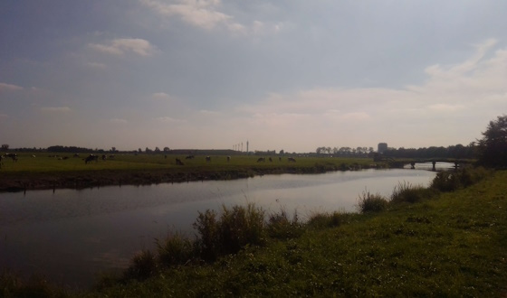

Fig.1 - Hof van Eden playground. Fig.3 - Volo playground. Fig.5 - Local kreek.  Fig.7 - Local kreek. Fig.2 - De Dolfijn playground. Fig.4 - Hof van Eden playground. Fig.6 - Neighbourhood house. Fig.8 - De Dolfijn playground.